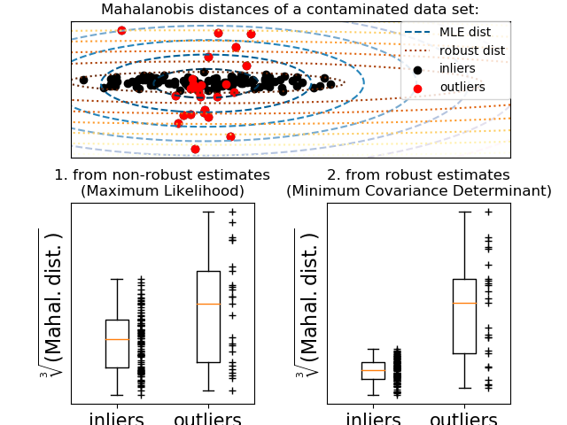

2.6. 协方差估计(Covariance estimation)¶
许多统计问题都需要估计种群的协方差矩阵，这可以看作是对数据集散点图形状的估计。 大多数情况下，这样的估计必须对样本进行，因为它的性质(大小、结构、均匀性)对估计的质量有很大的影响。 sklearn.covariance 包提供了在各种情景下准确估计总体协方差矩阵(population’s covariance matrix)的工具。
我们假定观测是独立的、同分布的(i.i.d.)。
2.6.1. 经验协方差¶
只要观测的数目比特征数目大得多，数据集的协方差矩阵可以由经典的极大似然估计(maximum likelihood estimator)(或“经验协方差 empirical covariance”)很好地逼近。 所谓特征(features)就是用来描述观测(observations)的变量。 更准确的说，一个样本的极大似然估计是对应的总体协方差矩阵的无偏估计(unbiased estimation)。
样本的经验协方差矩阵可以使用 empirical_covariance 函数计算, 或者通过拟合一个 EmpiricalCovariance 类对象
到对应的数据样本，需要使用该类的 EmpiricalCovariance.fit 方法。
必须要小心拟合结果依赖于数据是否被中心化了，所以你要准确的使用参数 assume_centered 。 更精确的，如果 assume_centered=False ,
那么测试集也会被认为有与训练集一样的均值。如果不是，那么训练集和测试集都需要用户进行中心化，所以应该使用参数 assume_centered=True 。
案例:
- See Shrinkage covariance estimation: LedoitWolf vs OAS and max-likelihood for
an example on how to fit an
EmpiricalCovarianceobject to data.
2.6.2. 缩减(Shrunk)协方差¶
2.6.2.1. Basic shrinkage¶
尽管极大似然估计是协方差矩阵的无偏估计，但是极大似然估计并不是协方差矩阵特征值(eigenvalues of the covariance matrix)的一个很好的估计。
因此，由其反演得到的精度矩阵(precision matrix)是不准确的。有时，由于数值上的原因，经验协方差矩阵甚至不能被倒置(invert)。
为了避免这样的反演问题(inversion problem)，引入了经验协方差矩阵的一种变换：shrinkage。
在 scikit-learn 中，此变换(具有用户定义的收缩系数,shrinkage coefficient)可直接应用于使用 shrunk_covariance 方法预先计算出的协方差上。
另外，协方差的收缩估计可以用 ShrunkCovariance 类和它的 ShrunkCovariance.fit 方法 在数据上拟合得到。
再说一遍, 估计结果依赖于数据是否被中心化，因此你必须正确的使用 assume_centered 参数。
从数学上讲, 这个收缩变换(shrinkage)包括减小经验协方差矩阵的最小特征值与最大特征值之比。 这可以通过简单地根据给定的偏移量移动每个特征值来实现，这也等价于 寻找协方差矩阵的 L2-penalized 极大似然估计。 在实践中，收缩(shrinkage)归结为一个简单的凸变换(convex transformation): \(\Sigma_{\rm shrunk} = (1-\alpha)\hat{\Sigma} + \alpha\frac{{\rm Tr}\hat{\Sigma}}{p}\rm Id\) 。
选择收缩量(the amount of shrinkage), \(\alpha\) 参数用于进行偏差/方差折中(bias/variance trade-off), 对此下面做了讨论。
案例:
- See Shrinkage covariance estimation: LedoitWolf vs OAS and max-likelihood for
an example on how to fit a
ShrunkCovarianceobject to data.
2.6.2.2. Ledoit-Wolf shrinkage¶
在2004年的论文 [1]_中，O.Ledoit和M.Wolf提出了一个计算最优收缩系数 \(\alpha\) 的公式， 该公式使估计的协方差矩阵与真实协方差矩阵之间的均方误差最小。
协方差矩阵的Ledoit-Wolf估计可以在样本上用 sklearn.covariance 包的 ledoit_wolf 函数计算，
也可以通过将 LedoitWolf 对象拟合到同一个样本得到。
Note
总体协方差矩阵为各向同性(isotropic)的情形
值得注意的是，当样本数量远远大于特征数量时，人们会认为不需要收缩。这背后的直觉是，如果总体协方差是满秩的， 当样本数量增加时，样本协方差也会变为正定。因此，没有收缩的必要，该方法应该自动做到这一点。
然而，当总体协方差恰好是恒等矩阵(identity matrix)的倍数时，在Ledoit-Wolf过程中就不是这样了。 在这种情况下，Ledoit-Wolf收缩估计值随着样本数的增加而接近1。 这表明，Ledoit-Wolf意义下协方差矩阵的最优估计是恒等式的倍数(multiple of the identity)。 由于总体协方差已经是恒等矩阵的倍数，Ledoit-Wolf解确实是一个合理的估计。
案例:
- See Shrinkage covariance estimation: LedoitWolf vs OAS and max-likelihood
一个关于如何使
LedoitWolf对象与数据相拟合以及从可能性的角度可视化Ledoit-Wolf估计器性能的例子。
参考文献:
| [1] | O. Ledoit and M. Wolf, “A Well-Conditioned Estimator for Large-Dimensional Covariance Matrices”, Journal of Multivariate Analysis, Volume 88, Issue 2, February 2004, pages 365-411. |
2.6.2.3. Oracle Approximating Shrinkage¶
在假设数据是高斯分布的情况下，Chen etal. [2] 导出了一个计算收缩系数(shrinkage coefficient)的公式， 与Ledoit-Wolf公式相比，该公式的平均平方误差(Mean Squared Error)较小。 得到的估计量称为协方差的Oracle收缩近似估计(Oracle Shrinkage Approximating estimator)。
协方差矩阵的OAS估计量可以使用 sklearn.covariance package 的 oas 函数在样本上计算，
也可以通过对同一样本的 OAS 对象拟合得到协方差矩阵的估计量。
参考文献:
| [2] | Chen et al., “Shrinkage Algorithms for MMSE Covariance Estimation”, IEEE Trans. on Sign. Proc., Volume 58, Issue 10, October 2010. |
案例:
- See Shrinkage covariance estimation: LedoitWolf vs OAS and max-likelihood
关于如何在数据上拟合
OAS对象的示例。 for an example on how to fit anOASobject to data. - See Ledoit-Wolf vs OAS estimation
LedoitWolf类和OAS类的方差估计量的均方误差的区别的可视化
2.6.3. 稀疏逆协方差¶
协方差矩阵的逆矩阵，通常称为精度矩阵(precision matrix)，它与部分相关矩阵（partial correlation matrix）成正比。 它给出部分独立性关系。换句话说，如果两个特征在其他特征上是条件独立的， 则精度矩阵中的对应系数将为零。 这就是为什么估计一个 稀疏精度矩阵 是有意义的：通过从数据中学习独立关系，能为协方差矩阵的估计创造更好的条件。 这被称为协方差选择(covariance selection)。
在小样本的情况下，即 n_samples 的数量级与 n_features 相当或更小， 稀疏的逆协方差估计往往比收缩协方差估计更好。
然而，在相反的情况下，或者对于非常相关的数据，它们可能在数值上不稳定。
此外，与收缩估计器(shrinkage estimators)不同，稀疏估计器(sparse estimators)能够恢复非对角线结构(off-diagonal structure)。
GraphicalLasso 估计器使用 L1 惩罚执行关于精度矩阵的稀疏性： alpha 参数越高，精度矩阵的稀疏性越大。
相应的 GraphicalLassoCV 对象使用交叉验证来自动设置 alpha 参数。
Note
结构恢复(Structure recovery)
从数据中的相关性中恢复图形结构是一件具有挑战性的事情。如果您对这种recovery感兴趣，请记住：
- 从相关矩阵(correlation matrix)恢复比从协方差矩阵(covariance matrix)恢复要容易：在运行
GraphicalLasso之前标准化观测数据 - 如果底层图的节点具有比平均节点多得多的连接，则算法将忽略其中的一些连接。
- 如果与基础图中的边缘数相比，observations的数量并不多，那么您将无法恢复它。
- 即使您处于有利的恢复条件下，交叉验证(例如使用
GraphicalLassoCV对象)选择的alpha参数也会导致选择过多的边缘。 然而，相关的边会比不相关的边有更重的权重。
数学形式如下:
其中：\(K\) 是要估计的精度矩阵（precision matrix）， \(S\) 是样本的协方差矩阵。
\(\|K\|_1\) 是 \(K\) 的非对角系数(off-diagonal coefficients)的绝对值之和。
用于解决这个问题的算法是来自 Friedman 2008 Biostatistics 论文的 GLasso 算法。 它与 R 语言 glasso 包中的算法相同。
案例:
- Sparse inverse covariance estimation: 在合成数据上的例子显示了某种结构的恢复，并与其他协方差估计器进行了比较。
- Visualizing the stock market structure: 真实的股票市场数据，找出哪些符号联系最紧密。
参考文献:
- Friedman et al, “Sparse inverse covariance estimation with the graphical lasso”, Biostatistics 9, pp 432, 2008
2.6.4. 鲁棒协方差估计¶
实际数据集通常是会有测量或记录错误。出于各种原因虽然合格但不常见的观测(observation)也可能出现。 不常见的观测称为异常值(outliers)。 上面提出的经验协方差估计器和收缩协方差估计器对数据中异常观测值非常敏感。 因此，应该使用鲁棒的协方差估计器(robust covariance estimators)来估算其真实数据集的协方差。 或者，可以使用鲁棒协方差估计器(robust covariance estimators)来执行异常值检测， 并根据数据的进一步处理，丢弃/降低某些observations。
sklearn.covariance 包实现了协方差鲁棒估计器， 即 Minimum Covariance Determinant [3] 。
2.6.4.1. 最小协方差行列式¶
最小协方差行列式(Minimum Covariance Determinant)估计器是由 P.J. Rousseeuw 在 [3] 中引入的数据集协方差的鲁棒估计(robust estimator)。 这个想法是找出一个给定比例(h)的 “好” 观测值，它们不是outliers， 且可以计算其经验协方差矩阵。 然后将该经验协方差矩阵重新缩放以补偿所执行的观察选择（”consistency step(一致性步骤)”）。 计算最小协方差行列式估计器后，可以根据其马氏距离（Mahalanobis distance）给出观测值的权重， 这导致数据集的协方差矩阵的重新加权估计（”reweighting step(重新加权步骤)”）。
Rousseeuw 和 Van Driessen [4] 开发了 FastMCD 算法来计算 Minimum Covariance Determinant。
将MCD对象拟合到数据中时就会用到该算法，FastMCD算法同时计算数据集位置的稳健估计。
原始估计可以通过 MinCovDet 类对象的 raw_location_ 和 raw_covariance_ 属性获得。
参考文献:
| [3] | (1, 2) P. J. Rousseeuw. Least median of squares regression. J. Am Stat Ass, 79:871, 1984. |
| [4] | A Fast Algorithm for the Minimum Covariance Determinant Estimator, 1999, American Statistical Association and the American Society for Quality, TECHNOMETRICS. |
案例:
- See Robust vs Empirical covariance estimate
一个关于如何将
MinCovDet对象在数据上拟合的示例，尽管存在异常值，估计结果仍然是准确的。 - See Robust covariance estimation and Mahalanobis distances relevance
用Mahalanobis距离表示
EmpiricalCovariance和MinCovDet协方差估计量之间的差异的可视化， 从而得到更好的精度矩阵估计。
| Influence of outliers on location and covariance estimates | Separating inliers from outliers using a Mahalanobis distance |
|---|---|
|  |